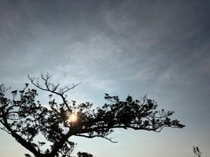
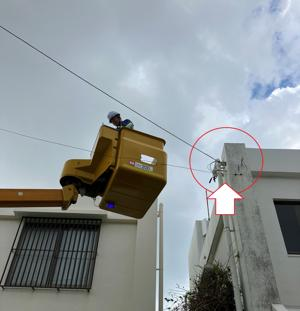

うるがいの話 ある日
最新: ネット環境復旧する【うるがいの話 ある日】とは 一日だけのプログです
『うるがいの話』の最新一日だけのプログで、通信料が少なく経済的だ。カニの画像をクリックすると全ての日付が載る『うるがいの話』サイトを表示します
|
|
【うるがいの話】 うるがい(ｳﾙｶﾞｲ urugai)とは、『もずくがに』の名前でとても大きくなります。 |
|---|---|
|
|
【カミマヤーの話】 猫のことを方言でマヤーといいます。カミマヤー（kamimayaa）とは、神の猫のことです。 |
|
【たながぁの音楽】 たながぁ（ﾀﾅｶﾞｰ tanagaa）とは手長えびのことで、何種類かあり大きいのは車 エビぐらいになります。 |

|
【ぶながぁの話】 ぶながぁ(ﾌﾞﾅｶﾞｰ bunagaa)とは、赤い髪の毛、赤い身体、そして身長は１ｍ２０ｃｍ ぐらい、川の蟹を食べているの目撃された。場所は沖縄県国頭郡大宜味村のと ある村僕の隣近所に住んでいる爺さんから、聞いた話です。 |
|
|
【ギーマの話】 ギーマ(giima)とは、山原の里山に咲くスズランに似た、 花を付けます。実は食べられます、 気が付くと口の周りが紫になっています。 |
2023年08月18日 (金）ネット環境復旧する
22:09
 
午後４時前、ネット環境が復旧する。原因は、台風で光回線の接続箇所が曲が
ってしまっていたこととのこと。『曲がりを直しました』と報告を受けるもの
の、ン、また台風がきたら同じ事になるのではとツッコム。『根元を補強し線
のたわみも調整しました』と答えたので納得する。でも、今後の台風はさらに
強く、災害の時間も長くなるので根本的な対策を健闘してネ（ＮＴＴ社内に伝
えて）等といろいろ話すと、職業はなにをされますかと問われたので、その筋
の人だよと冗談で答える。
復旧作業を行ったのは、北陸ＮＴＴの二人で専用車も金沢ナンバー、昨日沖縄
にきました、今日から仕事にかかり初めてのお客様ですと、北陸ナマリばりば
りでにこやかに話してくれた。まだ、道半ばだと思いますがＮＴＴは来週末ま
で復旧するらしいのだが、大変でしょうと話すと、我々は９月３日までいます
と正直に答えた。
２１時５９分 ビットコインの総資産 ￥１１、１４３（Ｎ/Ａ）